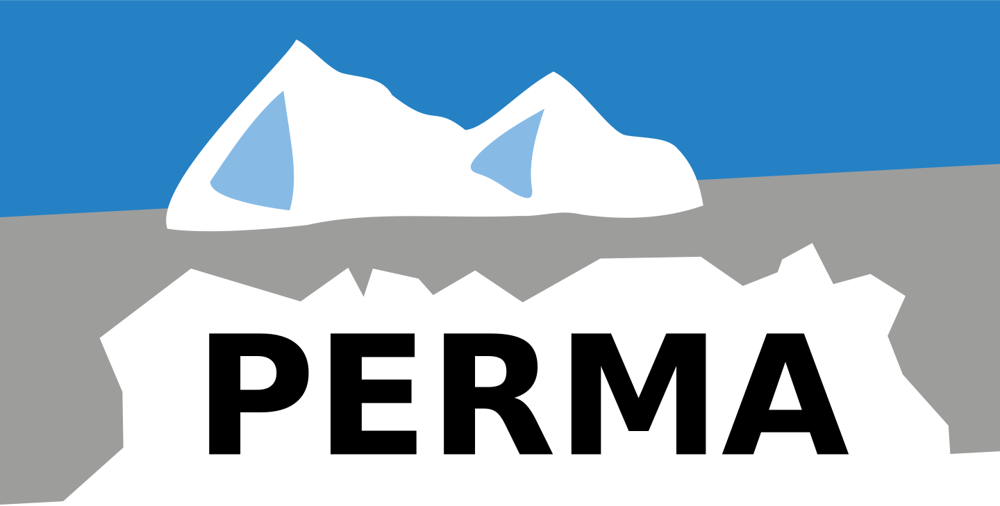

<!--Top Navbar-->
<nav class="navbar navbar-dark bg-dark mb-5">
  <!--PERMA icon-->
  <a href="#" class="navbar-brand"></a>
  <!--Perma Branding-->
  <a class="navbar-brand" href="/">PERMA</a>
  <div class="navbar-expand mr-auto">
    <!--Links in Navigation-->
    <div class="navbar-nav">
      <a class="nav-item nav-link active" href="#">Home</a>
      <!--<a class="nav-item nav-link" href="#">About</a>-->
    </div>
  </div>
  <div class="navbar-expand ml-auto navbar-nav">
    <div class="navbar-nav">
      <!--Github Link-->
      <a class="nav-item nav-link" href="https://gitlab-ext.iosb.fraunhofer.de/pse-edge/implementierung-frontend" target="_blank">
        <i class="fa fa-github"></i>
      </a>
    </div>
  </div>
</nav>
